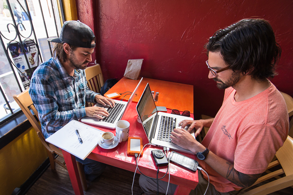

When you hear of someone living in a van, what do you assume of that person?
- Suit and tie or swimsuit and flip-flops?
- Crew cut or dreadlocks?
- Working or napping?
Chances are, you chose the latter of all of those options and I don’t blame you. Hell, I think the same thing and I live in a van myself!
That’s the power of stereotypes. Ever since the 70’s, and probably even before that, van dwellers have been known to go to concerts (ever heard of Woodstock?), sleep on beaches, and travel wherever they want on a whim.
160219_Texas_CorpusChristi-115.jpg
Sounds good, huh? Perhaps even irresponsible.
Even though we still do all those things, we at The Bro’d Trip do them a little differently. We try to be as responsible as possible by sharing with you the ins and outs of our daily life. Perhaps even a little inspiration to create a life for yourself that you love even more than the one you’re currently living. In addition, we also do “real” work. It’s just different than the work you’re used to seeing.
You may remember us telling you a while back that we’re Taking the Year Off to Work. And we are. Here’s what our work looks like.
(CAUTION: MIGHT MAKE WORKING LOOK FUN)
We’re constantly filming our day-to-day lives.

This footage turns into our weekly vlogs, and will be used to make our “docu-movie” at the end of the year.
Taking pictures of the places you only see in postcards.
160210_Oklahoma_WichitaMountains-079.jpg
Ever see a cool place on a postcard and wonder where the hell it is? We’ve found joy in finding those places (and proving it).
We maintain our own personal websites and take on individual freelance work in our spare time.
160112_NorthCarolina_RockyFaceParkClimbing-070.jpg
- Justin has a few writing contracts that provide him a steady source of income
- Adam maintains video editing projects for clients, remotely
Making sponsors happy makes us happy.
We are partnered with amazing companies. They see and believe in our vision and are instrumental in making our trip even better than it would be by ourselves. Being in contact with them and providing them with cool content for their use keeps them happy. They make us happy so we like making them happy too.
We team up and take on photography, videography, and writing jobs as we go.

That’s right, we’re available for hire! Contact us and we’ll highlight you or your business when we come through your neck of the woods.
We also take on passion projects.

For example, this fun clip with our friends (MY RED + BLUE & Written to Speak) in Nashville.
You may be asking:
“Where do you do all this work?!”
We have a new office every day.

Instead of sitting in a cubicle from 9-5 or clocking in, we log a 6-8 hour day each week in a coffee shop. (Some weeks it’s more, some less. It all depends on what needs to get done and what resources we need.) Reliable wifi is hard to find on the road, so a couple small black coffees buys us hours of internet connection to post the videos, photos, and words you see before you.
“6-8 hours of work per week? How’s that considered a job?”
A.) We don’t claim to have a job, we have a lifestyle. It’s different. And it doesn’t suck.
B.) You’d be surprised at how much work gets done in 6 hours in an enjoyable space (i.e. local coffee shop) when we’re doing work that we’re excited about. You should try it sometime.
But keep in mind, we can’t leave our work at the office.
160113_NorthCarolina_RockyFaceParkClimbing-002.jpg
We take it home with us. In fact, our work is our home and home is our work. Sound trippy? It is.
Between daily activities such as grocery shopping, cooking, laundry, filling up the gas tank, trip planning, tracking down a garden hose to shower with, and finding a new place to sleep every night, we are always brainstorming new blog topics, new ways to attract viewers/subscribers, and nurturing our brotherly relationship so we don’t kill each other.
Imagine doing a full day of work, then going home with your coworker, cooking dinner together, sleeping on 5-inch-thick mattresses uncomfortably close together, waking up at the same time and doing it all over again.
This is van life. This is working on the road. This is Road Work.
And I wouldn’t trade it for any job in the world.